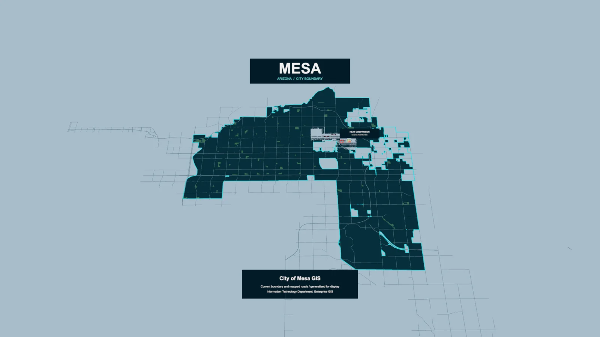
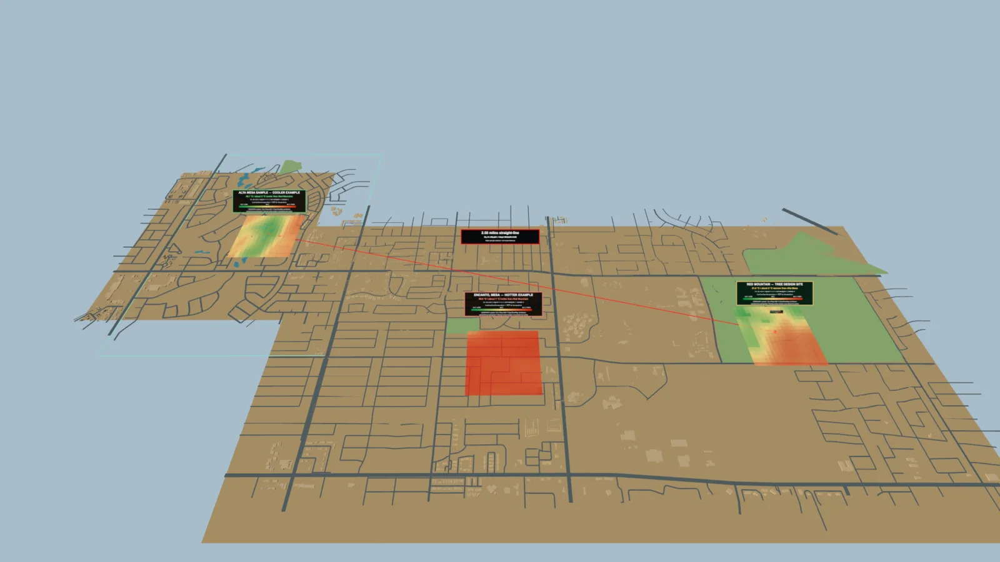
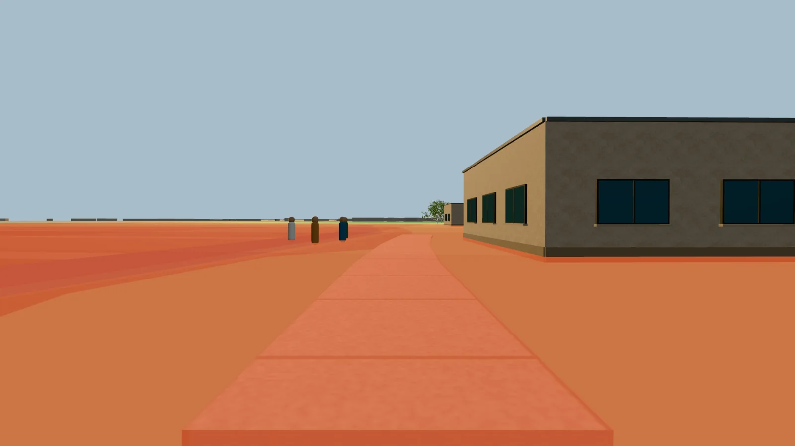
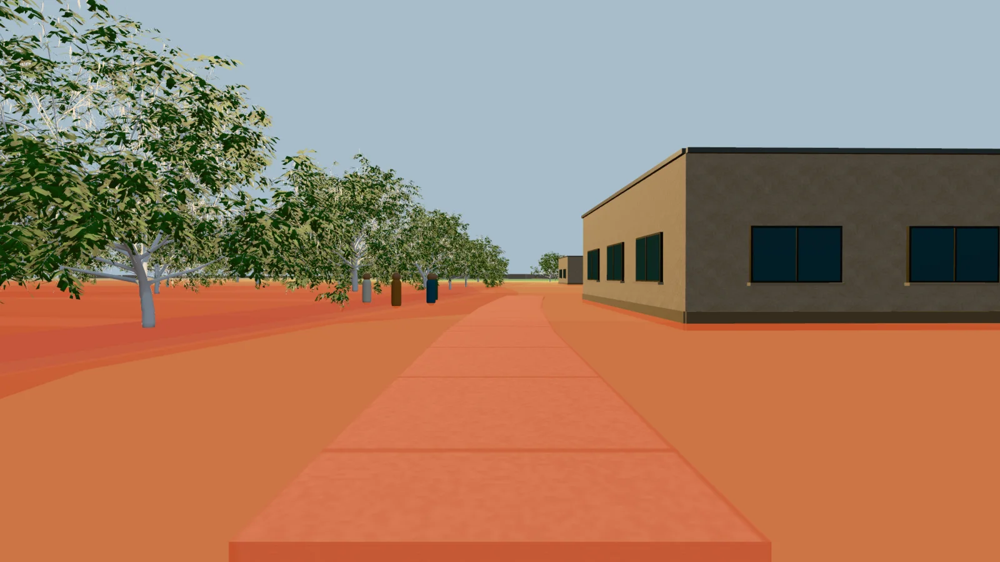

FutureFlux: From a Mesa heat map to a tree-shade proposal #
Build a 48-second heat tour in Strata, from mapped geometry and Landsat observations to a proposed tree planting, camera moves, and bilingual subtitles.
All tutorials · Build the base GIS scene by hand
Build a three-site heat tour and a tree-shade proposal for Red Mountain Multigenerational Center in Mesa, Arizona. Start with mapped geometry, keep satellite observations separate from the design, and check each step before moving on. No model or speech tool is needed for steps 1–7.
Before starting: Save unrelated work and use a separate Strata project. Open the pinned Mesa scene for inspection. This walkthrough describes the finished local 48-second revision; some details differ from the pinned copy. Use the linked base tutorial for complete Shell blocks that construct the original mapped site from an empty scene.
1. Build the site from Mesa GIS #
Start with the City of Mesa REST catalogue. Use ParkFinder layer 19 path records 30121 (community center) and 30046 (park loop), and CommunityMaps layer 6 building footprint 53258. Keep those IDs on the scene groups so you can trace the meshes back to the source records.
Project WGS84 records to local meters with origin [-111.667328704, 33.431791272]: x east, y up, z south. Turn each centerline into flat path sections and extrude the mapped footprint vertically. The 3.3 m paths and 6 m shell are assumptions, not surveyed dimensions. Keep OpenStreetMap service roads, parking, and sports fields in a separate context group so they do not replace the Mesa features.
Human check: Orbit the scene. The center walkway should sit south of the footprint, the park path should curve north of it, and the roof should sit about 6 m above ground. Hide the OSM group: both paths and the building should stay in place.
2. Add the comparison neighborhoods and heat overlays #
Use Mesa’s municipal boundary for the opening and registered neighborhood records for Encanto (#301) and Alta Mesa (#6). Encanto here is in Mesa, not Phoenix. Put the boundary, title, study-area locator, and credit under a single opening group so they can fade together.
Use the July 29, 2025 Landsat 9 Collection 2 Level-2 scene LC09_L2SP_037037_20250729_02_T1. Read ST_B10 with QA_PIXEL; drop invalid, cloud, shadow, and snow pixels before taking the mean. Use equal 17 × 17 native product-grid windows. Convert valid digital numbers to Celsius with DN * 0.00341802 + 149 - 273.15. Project the cell corners into the scene’s local coordinates and draw the cells as a separate flat layer.
Use one shared 40–60 °C palette (green → yellow → red). Keep the source cells unchanged, and round only the displayed sample means: Encanto 58.5 °C, Alta Mesa 49.1 °C, Red Mountain 51.5 °C. These are surface temperatures from one overpass, not air temperatures or averages for entire neighborhoods.
Human check: Toggle each heat group and compare its edges with mapped context. Identical temperatures must get identical colors. At Alta Mesa, orbit at a shallow angle and make sure water does not flicker against the ground. The water-only depth fix should not affect the heat layer.

3. Lay out the route and measure it #
Order the route Encanto → Alta Mesa → Red Mountain. Draw a red double-headed arrow between each pair of sample centers. Compute horizontal distance in local meters with Math.hypot(b.x - a.x, b.z - a.z) and divide by 1609.344 for miles. Place the text where it will be readable during the camera pullbacks.
Human check: Look for 1.48 miles between Encanto and Alta Mesa and 2.56 miles between Alta Mesa and Red Mountain. Both should say straight-line distance, not imply a walkable route. Red Mountain is the design site, not the hottest observation.

4. Finish the center and stage the trees #
Keep the original footprint and 6 m shell. Use repeating albedo, normal, and roughness maps on the stucco and mineral roof. The finished scene uses six embedded 256 × 256 procedural maps and separate glazing, frames, sills, coping, and base trim. These additions provide visual detail; they are illustrative, not survey records.
Use two shared mesquite variants (tree4 and tree5) for the eight baseline trees and eighteen proposed trees. In the finished scene the simplified shared meshes use about 12.4 MB of unique geometry, down from about 36.4 MB; this is a mesh-size reduction, not a reduction in visible tree height. Keep the leaves green and preserve each tree’s position and contact with the ground. Stage the proposed trees as cumulative groups of 3, 8, and 18.
Human check: Reload a saved copy. Trees should not change size, sink into the ground, or appear before their reveal. At eye level the material maps should still load and the façade should not change the mapped footprint.
5. Make the shade visible without changing the observation #
Use a separate shadow receiver over the Red Mountain heat surface so the colored layer does not wash out the tree shadows. The walkthrough uses an illustrative light setup, not a dated solar study. Put the qualitative shade-benefit indicator at the top of the walkway view, and turn it green as trees appear. Keep it separate from the historical temperature legend.
Tree canopies block direct sunlight, so shaded pavement absorbs less solar energy and can stay cooler than pavement in full sun. The scene shows where shade increases; it does not calculate how many degrees the surface cools.
Human check: Compare 36 s and 45 s from the same walkway camera. There should be more visible shade at 45 s, but the Landsat layer and its 51.5 °C sample should be unchanged. The green indicator must not resemble a new temperature reading.


6. Animate and check the three shots #
In Render → Video → Camera Sequence, use a city opening camera, a comparison camera, and an eye-level walkway camera. Animate the city camera down toward Encanto while fading the city group. Match the first two cameras’ position, aim, and field of view at the handoff so the viewport does not jump even when it is not compositing the export fade.
- 0–12 s: Hold the city view, start the eased push-in at 4 s, fade the title and boundary from 5 to 9 s, and switch cameras at about 9 s. Settle over Encanto at 12 s.
- 12–36 s: Hold Encanto, pull back to show the first distance arrow, settle over Alta Mesa at 21 s, and pull back for the second arrow. Reach Red Mountain at 30 s, then descend from 32 to 36 s.
- 36–48 s: Hold the walkway framing. Reveal three proposed trees at 38 s, eight total at 41 s, and eighteen at 44 s.
Human check: Enable the timeline’s follow-camera checkbox and use as render. Scrub backward and forward across the first handoff and all three planting beats. The opening should restore on rewind, the camera should not snap at the switch, and the planting counts should agree with the indicator.
7. Add subtitles and verify the saved result #
Open Render → Subtitles and import timed SRT cues. The bilingual format uses English first and Spanish second. The three historical samples are 137.3 °F, 120.4 °F, and 124.7 °F in English and 58,5 °C, 49,1 °C, and 51,5 °C in Spanish. Close by explaining that the proposed trees provide shade, not a measured temperature drop.
In Render → Video, leave Skip First at None for timing to line up. Select Also export a matching .srt file for a sidecar, or hard-burn the bilingual track if both languages should always appear. Use separate SRT files for a player with a language selector. The 48-second cues leave the default two-second render tail uncaptioned.
Human check: Save and reopen a copy. Confirm the three camera beats, embedded textures, tree stages, and caption units. Read the map legend and credits at output size before exporting.
Sources and credits #
- City of Mesa Open Data Terms — City of Mesa GIS, including Enterprise GIS building footprints. Preserve City credit and any dataset-specific notices.
- © OpenStreetMap contributors — separately attributed context under ODbL.
- USGS Landsat 9 Collection 2 Level-2 — historical land-surface-temperature observations; not a cooling model.
Credits and licences #
People #
- Tejaswi Gowda (script, scene)
Assets #
- City of Mesa GIS: City of Mesa GIS paths, Enterprise GIS building footprint, city boundary, and neighborhood records. Licence: City of Mesa Data Terms of Use License Agreement; see dataset-specific notices.
- OpenStreetMap: © OpenStreetMap contributors; separately attributed context. Licence: Open Database License (ODbL).
- USGS Landsat 9 Collection 2 Level-2: Historical land-surface-temperature observations; not a cooling model. Licence: USGS public domain.
Tools #
- Three.js (MIT)
- Playwright (Apache-2.0)
- dub.webcli.app (GPL-3.0)
- whisper.webcli.app (not stated in the demo provenance)
- Qwen2.5-Coder-1.5B-Instruct (Apache-2.0)
8. Optional: Playwright harness for distributed decision-making and suggestions #
Here, distributed means different participants and components have different responsibilities. A resident defines the need. A model suggests an operation. The scene host determines what can be executed. The editor records the edit. The current rehearsal is single-operator browser automation, not multiplayer editing, voting, or community approval.
- Resident or facilitator: State the need and clarify the location in your own words.
- Dub and Whisper: Dub makes synthetic speech for this rehearsal. Whisper transcribes the actual WAV; Playwright forwards that transcript, not the original script.
- Strata model: Suggest a structured operation from a closed vocabulary, or refuse. It does not write geometry.
- FutureFlux host: Enumerate visible tagged candidates, check operation and target, and either return a named refusal or apply an undoable edit.
- Playwright: Drive browser surfaces, wait for real results, assert the refusal and the later edit, and save a numbered report. It does not make the decision.
Run the English rehearsal #
Use the FutureFlux demo folder, not the Strata Editor repository. Run these commands from that folder. The runner loads its own scene.json into an isolated demo/.browser/ profile; don’t point it at your working scene or normal profile.
npm ci
npm test
npx playwright install chromium
npm run rehearse
For installed Chrome, use FLUX_BROWSER_CHANNEL=chrome npm run rehearse. First use needs network access for the hosted apps and model downloads. Rehearsal writes evidence, not video footage.
- Ask “What if we shaded this walkway?” With the community-center walkway and park loop both visible, the host returns
ambiguous-path, highlights both, and asks which one. Nothing is added. The English runner holds the refusal visibly for at least 3.5 seconds. - Clarify “The one by the community center.” On success the validated
shade.addadds one proposal tocenter-walk. - Read the newest
takes/*-english.json. Check the actual transcript, refusal, resolved path, and edit journal. The older fixture rehearses a canopy; the 48-second tour uses trees. The fixture does not exercise the Landsat layer.
If it fails, check the transcript before looking at candidate selection and refusal reason. Don’t silently fix a transcript or substitute a successful model response. Spanish SRT playback and Spanish speech recognition are separate checks. Earlier Spanish speech attempts did not reliably resolve the landmark and were refused without an edit. No OBS footage or Spanish end-to-end pass is claimed.
Workshop extension: Suggest → Review → Apply #
The existing rehearsal applies a valid clarified operation automatically. The following human review step is a proposed extension, not a feature already available in Strata.
- Suggest: Collect options against the same scene revision, such as shading the center walkway first or comparing it with the park loop. Show the landmark, proposed change, rationale, and limits of the evidence. Preview separately; don’t change the shared baseline.
- Review: Compare suggestions side by side. Clarify locations and discuss coverage, access, and maintenance. Record the facilitator’s reason and any unresolved objections rather than picking a winner automatically.
- Apply: A designated facilitator approves one proposal. Recheck the target and scene revision before applying one undoable command. If the scene changed, require reconfirmation.
Use two isolated Playwright browser contexts for resident and reviewer roles against a disposable test project. Connect them through the prototype’s shared suggestion store: isolated contexts don’t share local editor state. Pin a scene fixture and compare affected objects before and after each step.
- Ambiguous: Show both candidates and request clarification; no geometry changed.
- Awaiting review: The reviewer sees the target and rationale; the shared scene stays unchanged.
- Rejected: Record the reason; no edit occurs.
- Approved: Apply one edit to the approved path; repeated approval doesn’t duplicate it; Undo restores the prior state.
- Stale: A changed scene revision blocks the proposal until reconfirmed.
- Transcription or model failure: Show a named failure; no fallback edit.
Use fixed transcripts or model outputs for fast approval-state tests and label them as fixtures. Keep a separate live rehearsal for actual speech and inference. Log suggestion ID, scene revision, candidate IDs, decision, and resulting edit ID. Use synthetic or consented speech and keep personal information out of shared reports.